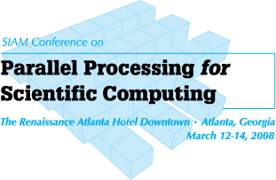

SIAM PP08 Workshop for HPC on Large Graphs
The Rennaissance Atlanta Hotel Downtown
Atlanta, GA
12-14 March 2008
Scope and Goals:
Graphs are a fundamental representation of information that spans the widest possible range of computing applications. They are particularly important to computational biology, web search, and knowledge discovery. As the sizes of the graphs increase, the need to apply High Performance Computing (HPC) to solve these problems is growing dramatically. This workshop represents a unique opportunity for the community of researchers in this field and focus on the technical issues associated with applying HPC to large graph problems. The workshop will feature several invited speakers drawn from the leaders in this new and rapidly growing field.
Location:
This workshop is co-located with SIAM PP08, held 12-14 March 2008, at the Rennaissance Atlanta Hotel Downtown in Atlanta, GA. Registration information for PP08 can be found at here.
Speakers:
| Speaker | Topic |
|---|---|
| Prof. David A. Bader (Georgia Tech) |
TBD |
| Dr. Jon Berry (Sandia) |
TBD |
| Dr. Danny Dunlavy (Sandia) |
Tensor Decompositions for Analyzing Multi-Link Graphs |
| Prof. John Gilbert (UCSB) |
TBD |
| Dr. Jeremy Kepner (MIT-LL) |
Kronecker Theory of Power Law Graphs |
| Mr. Jure Leskovec (CMU) | TBD |
| Mr. Kamesh Madduri (Georgia Tech) |
TBD |
| Mr. Eric Robinson (MIT-LL, NEU) |
Array Based Betweenness Centrality |
Workshop Co-Chairs:
- Prof. David A. Bader, Georgia Institute of Technology
- Prof. John R. Gilbert , University of California, Santa Barbara
- Dr. Jeremy Kepner, MIT Lincoln Laboratory